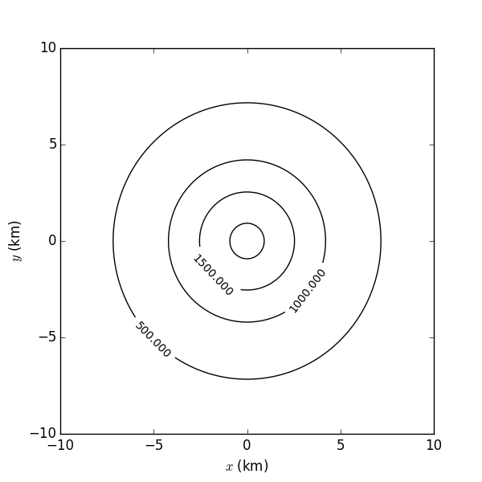

FFM234, Klassisk fysik och vektorfält - Föreläsningsanteckningar
Aug 18, 2020
1. Fält och derivator
Ett fält är en fysikalisk storhet som kan beskrivas som en funktion av positionen i rummet \( \vec{r} \) och tiden \( t \). I den här kursen kommer vi att behandla två typer av fält, skalära fält och vektorfält.
Skalärfält
$$ \begin{equation} \Phi = \Phi(\vec{r},t), \quad \Phi \in \mathbf{R},\quad \vec{r} \in \mathbf{R}^3 \label{_auto1} \end{equation} $$
| Skalär | Symbol | Enhet |
| tryck | \( p \) | Pascal (Pa), 1 Pa = 1 \( \mathrm{N/m}^2 \) |
| densitet | \( \rho \) | \( \mathrm{kg/m}^3 \) |
| temperatur | \( T \) | Kelvin (K), Celsiusgrader (\( ^\mathrm{o}\mathrm{C} \)) |
Vektorfält
$$ \begin{equation} \vec{F} = \vec{F}(\vec{r},t), \quad \vec{F} \in \mathbf{R}^3,\quad \vec{r} \in \mathbf{R}^3 \\ \label{_auto2} \end{equation} $$
| Vektor | Symbol | Enhet |
| hastighet | \( \vec{v} \) | m/s |
| kraft | \( \vec{F} \) | N |
| Magnetfält | \( \vec{B} \) | Tesla (T) |
Rum och koordinatsystem
En viktig egenskap hos skalärer och vektorer är att dessa är oberoende av koordinatsystem (transformation). Mer om detta senare när vi pratar om tensorfält.
I ett Cartesiskt koordinatsystem på \( \mathbf{R}^3 \) gäller att en allmän vektor \( \vec{A} \) kan skrivas $$ \begin{equation} \vec{A} = A_x \hat{x} + A_y \hat{y} + A_z \hat{z} \label{_auto3} \end{equation} $$ där \( \hat{x} \), \( \hat{y} \) och \( \hat{z} \) är ortonormerade basvektorer.
I detta koordinatsystem har vi följande partiella derivator \( \frac{\partial}{\partial x} \), \( \frac{\partial}{\partial y} \), \( \frac{\partial}{\partial z} \). Vi använder ibland kortnotationen \( \partial_x \equiv \frac{\partial}{\partial x} \).
Detta ger vektoroperatorn $$ \begin{equation} \vnabla = \hat{x} \partial_x + \hat{y} \partial_y + \hat{z} \partial_z, \label{_auto4} \end{equation} $$ som uttalas nabla eller dell.
Vektoralgebra
Repetera detta om ni känner er osäkra!
Exemplen nedan i Cartesiska koordinater.
Addition
$$ \begin{equation} \vec{A}+\vec{B} = (A_x + B_x) \hat{x} + (A_y + B_y) \hat{y} + (A_z + B_z) \hat{z} \label{_auto5} \end{equation} $$ och motsvarande för subtraktion.Resultatet är en vektor.
Skalärprodukt
$$ \begin{equation} \vec{A} \cdot \vec{B} = |\vec{A}| |\vec{B}| \cos\theta, \label{_auto6} \end{equation} $$ där \( |\vec{A}| \) och \( |\vec{B}| \) är vektornormerna enligt nedan och \( \theta \) är vinkeln mellan vektorerna.På komponentform $$ \begin{equation} \vec{A} \cdot \vec{B} = A_x B_x + A_y B_y + A_z B_z, \label{_auto7} \end{equation} $$ eftersom \( \hat{x} \cdot \hat{x} = \hat{y} \cdot \hat{y} = \hat{z} \cdot \hat{z} = 1 \) och \( \hat{x} \cdot \hat{y} = \hat{x} \cdot \hat{z} = \hat{y} \cdot \hat{z} = 0 \).
Resultatet är en skalär.
Vektornorm
$$ \begin{equation} A = |\vec{A}| = (\vec{A} \cdot \vec{A})^{1/2} = (A_x^2 + A_y^2 + A_z^2)^{1/2}. \label{_auto8} \end{equation} $$Kryssprodukt
$$ \begin{align} \vec{A} \times \vec{B} & = \left| \begin{array}{ccc} \hat{x} & \hat{y} & \hat{z} \\ A_x & A_y & A_z \\ B_x & B_y & B_z \end{array} \right| \label{_auto9} \\ & = (A_y B_z - A_z B_y)\hat{x} + (A_z B_x - A_x B_z)\hat{y} + (A_x B_y - A_y B_x) \hat{z}. \label{_auto10} \end{align}$$Skalärfält
Ett skalärt fält representeras av ett tal i varje punkt. Exempel på sådana fält är temperatur, tryck, elektrisk laddningstäthet.
Nivåyta
Geometriskt brukar vi beskriva ett skalärt fält \( \Phi(x,y,z,t) \) genom att rita de ytor på vilka fältet är konstant. Vi kallar sådana ytor för nivåytor, eller i två dimensioner nivåkurvor. Vissa typer av nivåkurvor har fått speciella namn, till exempel isotermer för kurvor längs vilka temperaturen är konstant och isobarer längs vilka trycket är konstant. Man kan konstruera nivåytorna genom att ställa upp ekvationen \( C = \Phi(x,y,z,t) \), och lösa den för olika C.
Gradient, fältlinjer
Ett viktigt begrepp när vi arbetar med skalära fält är gradienten. Betrakta två punkter \( (x,y,z) \) och \( (x+\mbox{d}x,y+\mbox{d}y,z+\mbox{d}z) \). Skillnaden i skalären \( \Phi \) mellan dessa båda punkter är $$ \begin{align} \mbox{d}\Phi &= \Phi\left(x+\mbox{d}x, y+\mbox{d}y,z+\mbox{d}z\right) - \Phi\left(x,y,z\right) \nonumber \\ & \approx \Phi\left(x,y,z\right) + \frac{\partial \Phi}{\partial x}\mbox{d}x + \frac{\partial \Phi}{\partial y}\mbox{d}y + \frac{\partial \Phi}{\partial z} \mbox{d}z - \Phi\left(x,y,z\right) \nonumber \\ & = \frac{\partial \Phi}{\partial x}\mbox{d}x + \frac{\partial \Phi}{\partial y}\mbox{d}y + \frac{\partial \Phi}{\partial z} \mbox{d}z. \label{_auto11} \end{align} $$ Den här skillnaden kan vi tolka som skalärprodukten mellan vektorn $$ \begin{equation} \mbox{d}\vec{r} = \left(\mbox{d}x,\mbox{d}y,\mbox{d}z\right), \label{_auto12} \end{equation} $$ som beskriver separationen mellan de båda punkterna och vektorn $$ \begin{equation} \vnabla \Phi = \left(\frac{\partial \Phi}{\partial x}, \frac{\partial \Phi}{\partial y}, \frac{\partial \Phi}{\partial z}\right), \label{_auto13} \end{equation} $$ som vi kallar för gradienten av \( \Phi \). Dvs \( \mbox{d}\Phi = \mbox{d}\vec{r} \cdot \vnabla \Phi \).
Med en normalvektor \( \hat{n} \) som har längden 1, så är \( \hat{n} \cdot \vnabla \Phi \) riktningsderivatan för \( \Phi \) i riktningen \( \hat{n} \), det vill säga den mäter hur snabbt \( \Phi \) varierar i denna riktning.
Riktningsderivata
Vad blir enheten på denna riktningsderivata?
Svar:
Enheten är $[ \Phi ]$/längd. Notera att \( [ \hat{n} ]=1 \).Gradientoperatorn $$ \begin{equation} \vnabla = \left(\frac{\partial}{\partial x}, \frac{\partial}{\partial y}, \frac{\partial}{\partial z}\right), \label{_auto14} \end{equation} $$ är i sig själv inte en vektor, utan den är en vektoroperator, som tar ett skalärfält och producerar ett vektorfält. Skillnaden mellan en vektoroperator och en vektor kommer att märkas när vi bekantar oss med räknereglerna för vektoroperatorer.
Det är enkelt att visa att \( \vnabla \Phi \) är ortogonal mot nivåytorna för \( \Phi \). Låt \( \hat{e}_t \) vara en tangentvektor till en nivåyta genom en punkt \( \vec{r}_0 \). Eftersom \( \Phi = \Phi_0 \) (konstant) längs nivåytan gäller att $$ \hat{e}_t \cdot \vnabla \Phi = 0 \quad \Rightarrow \quad \hat{e}_t \perp \vnabla \Phi. $$
Kurvor som i varje punkt har \( \vnabla \Phi \) som tangentvektor kallas för fältlinjer.
Exempel: Höjdkurvor och riktningsderivata
Betrakta en bergstopp med en höjdyta som ges av $$ \begin{equation} h(\vec{r}) = \frac{h_0}{1+\frac{x^2+y^2}{R^2}}, \label{_auto15} \end{equation} $$ där \( h \) ger höjden över havet, \( h_0 \) är höjden på toppen av berget, och \( R \) är ett mått på bergets utbredning.
import numpy as np
import pylab as p
# Make an x,y grid
grid = np.linspace(-10000,10000,500)
x, y = np.meshgrid(grid,grid)
# and the 2D field
R0=4000 # radius measure
h0= 2106 # peak height
h = h0 / (1 + (x**2 + y**2)/R0**2)
from mpl_toolkits.mplot3d import Axes3D
fig = p.figure()
ax = fig.gca(projection='3d')
surf = ax.plot_surface(x/1000, y/1000, h)
#ax.set_zlim3d(-1, 1)
ax.set_xlabel(r'$x$ (km)')
ax.set_ylabel(r'$y$ (km)')
ax.set_zlabel(r'$h$ (m)')

Vi kan göra en höjdkarta genom att rita upp några nivåytor, dvs kurvor som motsvarar konstanta värden på \( h \). Vi ser enkelt att kurvan \( x^2 + y^2 = C^2 \) (konstant) ger \( h_C = \frac{h_0}{1+\frac{C^2}{R^2}} \) (konstant) och att höjdkurvorna därför motsvarar cirklar med centrum i origo (\( x=y=0 \)).
from matplotlib import colors
p.figure(figsize=(6,6))
heights = np.linspace(500,2000,4)
CS = p.contour(x/1000,y/1000,h,heights,colors='k')
p.clabel(CS, inline=1, fontsize=10)
p.xlabel(r'$x$ (km)')
p.ylabel(r'$y$ (km)')

Eller kombinerat med höjdkurvor enligt en kontinuerlig färgskala
p.pcolormesh(x/1000, y/1000, h, cmap=p.get_cmap('cubehelix_r'))

Gradienten av detta fält kommer att motsvara höjdändringen per längdenhet i horisontalplanet. Vi finner denna genom att skriva \( x^2 + y^2 = r^2 \) så att \( h=h(r) \). Vi får $$ \begin{equation} \frac{\mbox{d}h}{\mbox{d}r} = - \frac{h_0}{(1+r^2/R^2)^2} \frac{2r}{R^2} \label{_auto16} \end{equation} $$ Vidare är $$ \begin{equation} \frac{\partial r}{\partial x} = \frac{1}{2} (x^2 + y^2)^{-1/2} 2 x = \frac{x}{r}, \label{_auto17} \end{equation} $$ och pss \( \partial_y r = y/r \). Därför blir $$ \begin{align} \vnabla h &= \hat{x} \partial_x h + \hat{y} \partial_y h = \hat{x} \frac{\partial h}{\partial r} \frac{\partial r}{\partial x} + \hat{y} \frac{\partial h}{\partial r} \frac{\partial r}{\partial y} \label{_auto18}\\ &= - \frac{2h_0}{R^2 (1+r^2/R^2)^2} \left( x \hat{x} + y \hat{y} \right). \label{_auto19} \end{align} $$ Riktningen på denna vektor ser vi är \( -\left( x\hat{x} + y\hat{y} \right) = -r\hat{r} \), dvs den horisontella höjdgradienten är riktad radiellt inåt - mot större värden av \( h \).
p.figure(figsize=(6,6))
grid_course = np.linspace(-10000,10000,11)
x_c, y_c = np.meshgrid(grid_course,grid_course)
radius = 2000
outside = x_c**2 + y_c**2 > radius**2
gradh_x = - 2*h0 / (R0**2 * (1 + (x_c**2+y_c**2)/R0**2)**2) * x_c
gradh_y = - 2*h0 / (R0**2 * (1 + (x_c**2+y_c**2)/R0**2)**2) * y_c
p.quiver(x_c[outside]/1000,y_c[outside]/1000,gradh_x[outside],gradh_y[outside],scale=3)
p.xlabel(r'$x$ (km)')
p.ylabel(r'$y$ (km)')

Vektorfält
Ett vektorfält beskriver på samma sätt en fysikalisk kvantitet som i varje punkt i rummet är en vektor. Exempel på sådana kvantiteter är hastigheten i en strömmande fluid, den magnetiska fältstyrkan, och den elektriska strömtätheten.
Fältlinjer
Geometriskt kan vi representera ett vektorfält genom att konstruera fältlinjer. Fältlinjerna till ett vektorfält \( \vec{F}(\vec{r}) \) är de kurvor som överallt har \( \vec{F}(\vec{r}) \) som tangentvektor.
För att förstå begreppet fältlinjer kan vi börja med att tänka oss ett vektorfält \( \vec{V}(x,y,z) \) som representerar en hastighet i en fluid. En testpartikel i fluiden följer då en bana \( \vec{r}(t) \) som ges av $$ \begin{equation} \frac{\mbox{d}\vec{r}}{\mbox{d}t} = \vec{V}\left(\vec{r}\right). \label{_auto20} \end{equation} $$ Analogt med detta definierar vi en fältlinje som den bana vi får genom att följa med ett godtyckligt vektorfält \( \vec{F} \) som om det var ett hastighetsfält. Ekvationen för ett sådant vektorfält är $$ \begin{equation} \frac{\mbox{d}\vec{r}}{\mbox{d}\tau} = C \vec{F}\left(\vec{r}(\tau)\right), \label{_auto21} \end{equation} $$ där \( C \) är en godtycklig konstant (dvs du kan välja den som du själv vill, så länge som du inte sätter den till noll), och \( \tau \) är en parameter för att numrera punkterna längs fältlinjen.
Exempel: föltlinjer (enkel diff.ekv.)
Vi vill konstruera fältlinjerna till $$ \begin{equation} \vec{F}\left(\vec{r}\right) = F_0\left(\frac{x}{a} \hat{x} + \hat{y}\right). \label{_auto22} \end{equation} $$ Detta ger oss differentialekvationerna $$ \begin{equation} \frac{\mbox{d}x}{\mbox{d}\tau} = CF_0 \frac{x}{a}, \label{_auto23} \end{equation} $$ $$ \begin{equation} \frac{\mbox{d}y}{\mbox{d}\tau} = C F_0. \label{_auto24} \end{equation} $$ Vi väljer nu \( C = a/F_0 \), så att ekvationerna blir $$ \begin{equation} \frac{\mbox{d}x}{\mbox{d}\tau} = x, \label{_auto25} \end{equation} $$ $$ \begin{equation} \frac{\mbox{d}y}{\mbox{d}\tau} = a \label{_auto26} \end{equation} $$ Dessa har lösningen $$ \begin{equation} x = x_0 \mbox{e}^\tau, \label{_auto27} \end{equation} $$ $$ \begin{equation} y = a \tau + y_0 \label{_auto28} \end{equation} $$ där \( x_0 \) och \( y_0 \) är den punkt på fältlinjen där \( \tau = 0 \).
Divergens och rotation
Vi kan derivera ett vektorfält på två huvudsakliga sätt. Dels kan vi bilda en skalär genom divergensen \( \vnabla \cdot \vec{F} \) (eller \( \mathrm{div} \vec{F} \)), eller en vektor genom rotationen \( \vnabla \times \vec{F} \) (eller \( \mathrm{rot} \vec{F} \)). I cartesiska koordinater blir de explicita uttrycken $$ \begin{align} \vnabla \cdot \vec{F} &= \partial_x F_x + \partial_y F_y + \partial_z F_z, \label{_auto29} \\ \vnabla \times \vec{F} & = \left| \begin{array}{ccc} \hat{x} & \hat{y} & \hat{z} \\ \partial_{x} & \partial_{y} & \partial_{z} \\ F_x & F_y & F_z \end{array} \right| = (\partial_y F_z - \partial_z F_y)\hat{x} + (\partial_z F_x - \partial_x F_z)\hat{y} + (\partial_x F_y - \partial_y F_x) \hat{z}. \label{_auto30} \end{align}$$
Divergensen ger ett mått på hur mycket fältet "går isär" (divergerar), medan rotationen mäter hur mycket det "snurrar runt".
Exempel: divergens
Vektorfältet \( \vec{F} = x\hat{x} + y\hat{y} + z\hat{z} \) har divergensen \( \vnabla \cdot \vec{F} = 3 \) och rotationen \( \vnabla \times \vec{F} = 0 \) (fältet är rotationsfritt). Notera att negativa värden på divergensen betyder att fältet "går ihop" (konvergerar).
Exempel: rotatation
Hastighetsfältet för en roterande fluid \( \vec{v} = \vec{\omega} \times \vec{r} \). Med \( \vec{\omega} = \omega \hat{z} \) fås \( \vec{v} = -\omega y\hat{x} + \omega sx\hat{y} \) och rotationen blir \( \vnabla \times \vec{v} = 2 \omega \hat{z} \) medan divergensen \( \vnabla \cdot \vec{v} = 0 \). Detta specifika hastighetsfält är alltså divergensfritt.
Laplaceoperatorn
Vi kommer också att stöta på den viktiga Laplaceoperatorn: \( \Delta = \vnabla \cdot \vnabla \). Verkande på ett skalärt fält i cartesiska koordinater blir detta $$ \begin{equation} \Delta \Phi = \vnabla \cdot \vnabla \Phi = \left( \partial_x^2 + \partial_y^2 + \partial_z^2 \right) \Phi. \label{_auto31} \end{equation} $$ Likaså kan denna verka på ett vektorfält \( \Delta \vec{F} = \vnabla \cdot \vnabla \vec{F} = \left( \partial_x^2 + \partial_y^2 + \partial_z^2 \right) \vec{F} \).
En första bekantskap med potentialfält
En potential, \( \Phi \), är ett viktigt specialfall av ett skalärt fält. Ur en potential kan vi beräkna ett vektorfält \( \vec{F} = - \vnabla \Phi \), som vi ofta kallar för en fältstyrka.
Vi kan då både konstruera nivåytorna till potentialen, vilka kallas ekvipotentialytor, och fältlinjerna till fältstyrkan. Lägg märke till att ekvipotentialytorna och fältlinjerna överallt måste vara ortogonala mot varandra.
Exempel: Fältbild (med en svårare diff.ekv.)
Bestäm fältbilden till potentialen $$ \begin{equation} \Phi\left(x,y\right) = \Phi_0 \frac{x^2 + y^2}{ax}. \label{_auto32} \end{equation} $$ Vi börjar med att bestämma ekvipotentialkurvorna genom att sätta \( \Phi = 2C/\Phi_0 \), så att vi får ekvationen $$ \begin{equation} 2C = \frac{x^2+y^2}{ax}. \label{_auto33} \end{equation} $$ Vi multiplicerar med \( ax \) och sätter alla termerna på samma sida om likhetstecknet $$ \begin{equation} 0 = x^2 -2aCx +y^2. \label{_auto34} \end{equation} $$ Efter kvadratkomplettering får vi $$ \begin{equation} 0 = \left(x - aC\right)^2 -a^2 C^2 + y^2. \label{_auto35} \end{equation} $$ Denna ekvation kan vi skriva om som $$ \begin{equation} a^2 C^2 = \left(x - aC\right)^2 + y^2, \label{_auto36} \end{equation} $$ vilket är ekvationen för en cirkel med centrum i \( (aC,0) \) och radien \( |aC| \). Detta innebär att alla ekvipotentialytorna går genom origo. Notera att det finns inget som förbjuder \( aC \) från att vara ett negativt tal.
Nu bestämmer vi fältstyrkan $$ \begin{equation} \vec{F} = - \vnabla \Phi = - \frac{\Phi_0}{a} \left(1 - \frac{y^2}{x^2}, \frac{2y}{x}\right). \label{_auto37} \end{equation} $$ Fältlinjerna är då lösningen till $$ \begin{equation} \frac{\mbox{d}x}{\mbox{d}\tau} = -C \frac{\Phi_0}{a}\left(1 - \frac{y^2}{x^2} \right), \label{x_ekv} \end{equation} $$ $$ \begin{equation} \frac{\mbox{d}y}{\mbox{d}\tau} = -C \frac{\Phi_0}{a} \frac{2y}{x}. \label{y_ekv} \end{equation} $$ Vi dividerar nu \eqref{y_ekv} med \eqref{x_ekv} $$ \begin{equation} \label{diffekv} \frac{\mbox{d}y}{\mbox{d}x} = \frac{2y/x}{1-y^2/x^2}, \end{equation} $$
Lösning 1
(Se avsnitt 7.2 i Arfken.)Vi noterar att vi har den allmänna formen av en första ordningens differentialekvation $$ \begin{equation} \frac{\mbox{d}y}{\mbox{d}x} = - \frac{P(x,y)}{Q(x,y)}. \label{_auto38} \end{equation} $$ Hade vår ekvation varit separabel hade vi fått en väldigt snabb lösning. För en separabel diff.ekv. gäller att \( P(x,y)=P(x) \) och \( Q(x,y)=Q(y) \) så att $$ \begin{equation} Q(y) \mbox{d}y = -P(x) \mbox{d}x, \label{_auto39} \end{equation} $$ vilket vi enkelt kan integrera. Men tyvärr, i vårt fall kan vi inte skriva ekvationen på denna form. Istället undersöker vi om den är en exakt differential. I sådana fall existerar det en funktion \( \varphi(x,y) \) så att $$ \begin{equation} \partial_x \varphi(x,y) = P(x,y) \quad \mathrm{och} \quad \partial_y \varphi(x,y) = Q(x,y). \label{_auto40} \end{equation} $$ Detta är i sin tur uppfyllt omm $$ \begin{equation} \partial_y P(x,y) = \partial_x Q(x,y). \label{exaktdiff} \end{equation} $$
I vårt fall är detta inte omedelbart sant eftersom vi har \( P(x,y) = - 2y/x \) och \( Q(x,y) = 1-y^2/x^2 \). Men strukturen ser ändå lovande ut; vi skulle dock önska att kvoterna var de omvända, dvs \( x/y \). Vi multiplicerar täljare och nämnare med \( -x^2/y^2 \) vilket ger $$ \begin{align} P(x,y) &= \frac{2x}{y}, \label{_auto41}\\ Q(x,y) &= 1 - \frac{x^2}{y^2}. \label{_auto42} \end{align} $$ vilket uppfyller \( \partial_y P(x,y) = \partial_x Q(x,y) \) (kolla gärna). En sådan funktion (i vårt fall \( \alpha(x,y) = -x^2/y^2 \)) kallas för en integrerande faktor och går alltid att finna. Men tyvärr existerar det inget systematiskt sätt att konstruera denna (förutom för linjära, första ordningens ODE).
Under detta villkor har diff.ekvationen lösningen (om du är intresserad, se ett bevis av denna ekvation här. Notera också att Arfken är lite slarvig med att skilja på integrationsvariabler och integrationsgränser.) $$ \begin{equation} \int_{x_0}^x P(x',y) \mbox{d}x' + \int_{y_0}^y Q(x_0,y') \mbox{d}y' = \mathrm{konstant}. \label{_auto43} \end{equation} $$ Vi får att $$ \begin{equation} \mathrm{konstant} = \left[ \frac{x'^2}{y} \right]_{x_0}^x + \left[ y' + \frac{x_0^2}{y'} \right]_{y_0}^y. \label{_auto44} \end{equation} $$ Sätt in integrationsgränserna $$ \begin{equation} \mathrm{konstant} = \frac{x^2}{y} - \frac{x_0^2}{y} + y + \frac{x_0^2}{y} - y_0 - \frac{x_0^2}{y_0}. \label{_auto45} \end{equation} $$ Två termer tar ut varandra och vi kan baka ihop alla konstanter till en ny (\( \mathrm{konstant} + y_0 + x_0^2/y_0 \equiv 2D \)). Multiplicera med \( y \) vilket ger $$ \begin{equation} x^2 + y^2 - 2 D y = 0. \label{_auto46} \end{equation} $$ Efter kvadratkomplettering får vi $$ \begin{equation} x^2 + \left(y-D\right)^2 = D^2, \label{_auto47} \end{equation} $$ vilket är ekvationen för en cirkel med centrum i \( (0,D) \) och med radien \( |D| \), det vill säga alla fältlinjerna går genom origo. Notera att det finns inget som förbjuder \( D \) från att vara ett negativt tal.